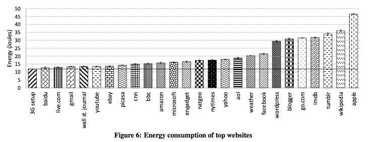
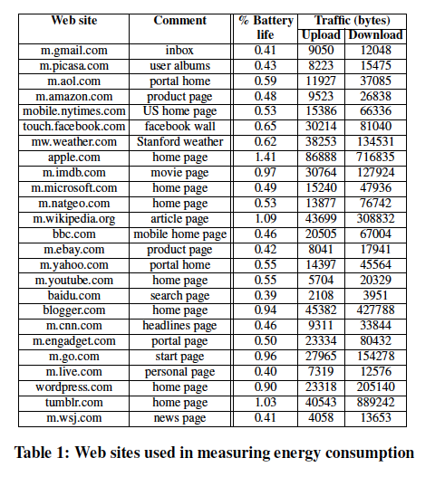
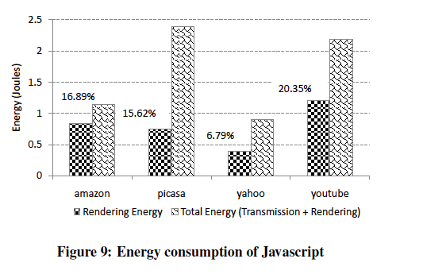
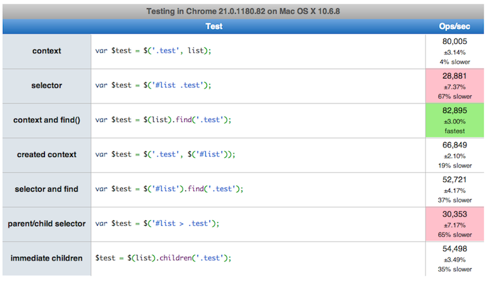

Performance Javascript
por Davidson Fellipe
Workshop na Globo.com (2012) e BrazilJS (2012)
Davidson Fellipe
- recife ✈ frontend engineer at globo.com ~ 2 anos
- ✪ riojs, pernambucojs, frontinbh e frontinmaceio
- ☕ mestrando na puc-rio
- ☺ subscribe me facebook.com/fellipe
trabalhando há 9 meses
por que performance?
alto processamento
+
consumo de memória
=
apps lentas
pouca memória... baixa cpu...
isso vai nos impedir de ter aplicações lentas?
usuários adoram espera...
+1 segundo para carregar o que significa?
Mozilla shaved 2.2 seconds off their landing pages, thereby increasing download conversions by
15.4%, which they estimate will result in 60 million more Firefox downloads per year.
Yahoo increased traffic by 9% for every 400 milliseconds of improvement.
Amazon found that it increased revenue by 1% for every 100 milliseconds of improvement
Qual a importância da performance frontend para seus projetos?
performance de frontend
Performance golden rule: Optimize front-end performance first, that's where 80/90% of the end-user response time is spent.
Steve Souders
comprimindo seu código
criando o seu min.js
-
comprima seus arquivos JS
-
minifique seus arquivos JS
-
e não esqueça do gzip
carregamento e execução
maiores desafios
-
evitar bloquear o carregamento da página
-
interação rápida
-
melhoria da percepção
- natureza bloqueante do javascript...
mas o que é ser bloqueante?
atualizações da interface
vs
execução do JavaScript
UI Thread
http://www.slideshare.net/nzakas/high-performance-javascript-jquery-conference-sf-bay-area-2010-3843763
exemplo UI Thread
<html>
<head>
<title>Script Example</title> </head>
<body>
<p>genesis</p>
<script type="text/javascript">
var i = 1000000000;
while(i--){}
</script>
<p>apocalipse</p>
</body>
</html>
javascript demorado
=
UI sem resposta
o que é um script demorado para o browser?
- IE - 5M statements ou HKEY MaxScriptStatements.
- Firefox - 10s ou dom.max_script_run_time key.
- Safari - 5s
- Chrome não tem limite e confia no crash detection.
- Opera - nenhum.
o que é um script demorado para o browser?
Jakob Nielsen afirma que a interface não pode responder à entrada do usuário, em um tempo maior que 100 milissegundos.
Chrome Frame
meta tag
<meta http-equiv="X-UA-Compatible" content="chrome=1">
Chrome Frame
apache
<IfModule mod_setenvif.c>
<IfModule mod_headers.c>
BrowserMatch chromeframe gcf
Header append X-UA-Compatible "chrome=1" env=gcf
</IfModule>
</IfModule>
apenas script tag
✔ carrega em paralelo
✔ executa em ordem
<script src="arquivo1.js"></script>
<script src="arquivo2.js"></script>
XHR Injection
✔ carrega em paralelo
✗ executa em ordem
var se = document.createElement('script');
document.getElementsByTagName('head')[0].appendChild(se);
se.text = xhrObj.responseText;
Script DOM Element
✔ carrega em paralelo
✗ executa em ordem
var domscript = document.createElement('script');
domscript.src = "menu.js";
document.getElementsByTagName('head')[0].appendChild(domscript);
tag script usando Defer
✔ carrega em paralelo
✗ executa em ordem
<script defer src="arquivo1.js"></script>
<script defer src="arquivo2.js"></script>
head.js
carregue em paralelo e execute em ordem
head.js("/path/to/jquery.js",
"/google/analytics.js",
"/js/site.js", function() {
// seu codigo
});
head.js
executando quando tudo estiver carregado
// use jQuery on the body of the page even though it is not included yet
head.ready(function() {
$("#my").jquery_plugin();
});
// load jQuery whenever you wish bottom of the page
head.js("/path/to/jquery.js");
head.js
ainda oferece...
- Screen size detector
- HTML5 enabler
- Browser detector
- JavaScript feature detection
repaint vs reflow
repaint
- quando algo é desenhado na tela
- para mudanças visuais que não necessitam de calculo de layout
- exemplo: color, background, background-images, visibility
reflow
requer calculo de layout
exemplo: carregamento inicial, mudança de estilos, redimensionamento de browser, mudanças da DOM.
Social Buttons
só mais um social button...
-
a essa página tem que ter um like button, ok?
-
a mais coloca o tweet button também...
-
vai que o google+, começa a bombar, vamos coloca-lo também...
-
analytics... and more...
-
Imagine o usuário acessando a página de onde o twitter é bloqueado?
javascript mobile...
Kindle 3: Processador ARM11 Freescale 532 MHz,
browser webkit, JavaScript, SSL e cookies.
javascript onde?
Consumo de energia e o Javascript
consumo de energia x
capacidade de processamento
Who killed my battery,
WWW 2012, Stanford University
Consumo em joules

percentual consumido da bateria

consumo de javascript

Exemplo: seletores jQuery

JSLitmus
web page test
yslow
page speed
OBRIGADO!
perguntas?